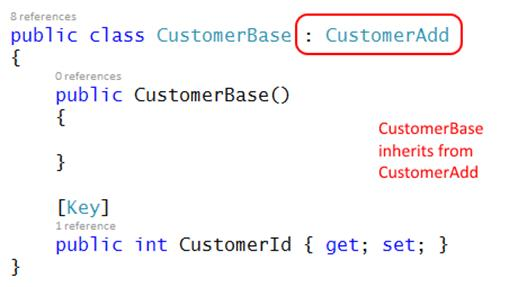
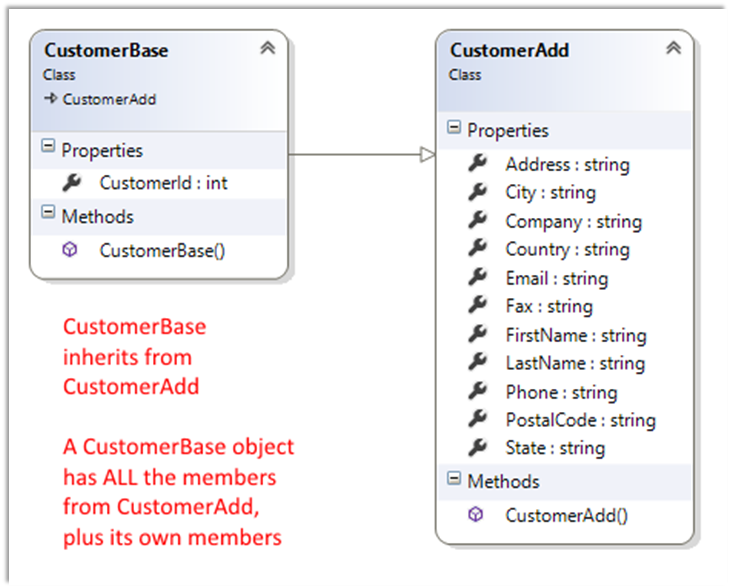
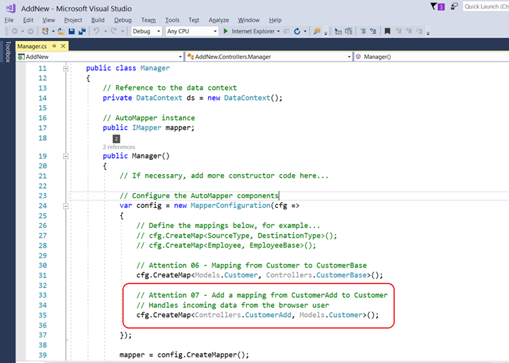
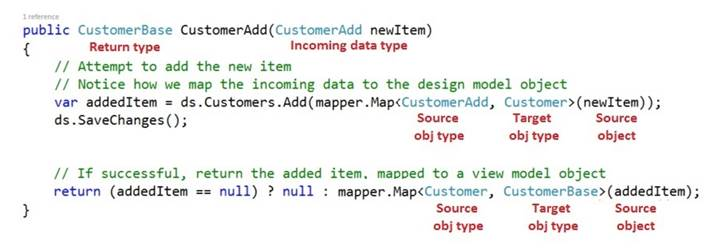
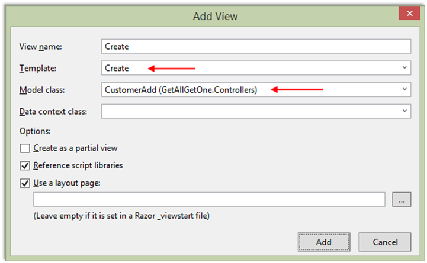

INT422 – Lecture 2-2
Learn the “add new” pattern. Hands-on with Assignment 2.
Code examples
Today: Using a persistent store – add new
Reminder: Principal theme for next few weeks
The key objective for this course is: Create interactive web apps, which have some complexity, and can scale.
To make progress in the next few weeks, the teacher team will give you a project template that includes a pre-configured, ready-to-use database – also known as a persistent store – and all the program objects that enable us to interact with it. As a result, we can use the next few weeks to focus on learning how to create interactive web apps, without worrying about data storage.
Checkpoint – we recently covered “get all” and “get one”
In the previous class, we covered the “get all” and “get one” use cases.
As we implemented these use cases, many new concepts and topics were introduced:
- Modular and layered software architecture model
- Persistent storage with a database, using the Entity Framework
- Two kinds of classes for objects – design model classes, and view model classes
- AutoMapper, a library to map objects between types (classes)
- Manager class, to handle data service operations, and used by all controllers
- Customized Visual Studio project template
Let’s continue, by adding more functionality.
Adding more functionality – “add new”
For this use case, we must deliver an HTML Form to the browser user.
Then, we must accept the posted data, and process it (by adding a new customer).
To preview our work, the controller method will call a manager method, which does the add-and-save work. The newly-added object is then returned to the controller, for final processing.
There are several tasks in the work plan. Here’s a list. Details follow.
- Create a view model
- Create a mapper
- In the Manager, create an “add new” method
- In the controller, modify the first Create() method, if necessary
- Create an “add new” view, using the scaffolder
- In the controller, modify the other Create() method, to call the manager “add new” method, and handle the result
Create a view model
We already have a CustomerBase view model class. It has all the properties we need to describe a customer object.
Can we use it for the “add new” use case?
NO.
As you recently learned, we need a CustomerAdd view model class. It has the properties needed for a new object, EXCEPT for the identifier.
Why don’t we need to gather the identifier from the browser user?
“By default, and by convention, the database server automatically assigns the identifier.
Note that this design approach says nothing about indexes that you (or your database administrator) may wish to create in a database, to support fast lookups etc. That’s an advanced topic, not covered in this course.”
In the view model source code file, add a new CustomerAdd class.

It needs a constructor. Add it. Later, we may – or may not – add code to the constructor.
Now, cut – NOT copy – all properties EXCEPT the identifier from the CustomerBase view model class. Paste them into the CustomerAdd class.
We will now modify the CustomerBase class, to inherit from CustomerAdd. The syntax is simple, and perhaps similar to what you see in other programming languages. After the class name, add a colon, and then the name of the superclass.

Here’s another way to look at it:

We will use view model class inheritance often, so make sure that you understand the concept and its implementation.
Create a mapper
The next mapping we need will map from a view model CustomerAdd class, to a design model Customer class. When you write the “create map” statement, ensure that you include the fully-qualified class name. Click to open the image full-size in a new tab/window.

In the Manager, create an “add new” method
If you skimmed the documentation for the DbSet<T> class, you may have noticed an Add() method, and a SaveChanges() method in the DbContext class.
Add() will add a new object to the data context (which really is an in-memory temporary work area for data objects).
SaveChanges() will save any changes in the data context to the data store.
Now that we know the plan, we create an “add new” method. Its features:
- An argument, of type CustomerAdd, that can be passed in from the controller
- A return type, of type CustomerBase, that can be passed back to the controller
Our first task is to attempt to add a new object to the data context Customers collection. The Add() method is expecting an object of type Customer. Therefore, we must map from CustomerAdd to Customer.
Next, attempt to save the changes.
Finally, return the object, guarding against a null result, and using AutoMapper to transform it into a view model object.
Here’s a typical “add new” method. Click to open the image full-size in a new tab/window.

In the controller, modify the first Create() method, if necessary
In ASP.NET MVC web apps, we ALWAYS use two methods for “add new”, “edit existing”, and “delete item”.
The first method responds to HTTP GET. Its job is to prepare the data that’s needed for an HTML Form, and pass the data to the view, which appears in the user’s browser.
The other method responds to HTTP POST, when the user submits the HTML Form. Its job is to validate the incoming data, process it, and handle the result.
First Create() method, for HTTP GET
Its job is to prepare the data that’s needed for an HTML Form, and pass the data to the view, which appears in the user’s browser.
The CustomerAdd class is simple, with text-only properties. For this situation, it probably is not necessary to send any data to the HTML Form. Therefore, the method body can be simple.
// GET: Customers/Create
public ActionResult Create()
{
// At your option, create and send an object to the view
return View();
}
Create an “add new” view, using the scaffolder
Create the “get one” view. Complete the dialog as shown below:

Important:
❝The “Data context class” field MUST be EMPTY. Do NOT enter a value.
Also, check/mark the “Reference script libraries” checkbox.
Now, going back to the browser, the “Create new” link on the list-of-customers page will work, and take you to a create view.
Also, as you learned in Assignment 1, you can edit the view, to make its appearance and text content nicer.
In the controller, modify the
other Create() method,
to call the manager “add new” method, and handle the result
The job of this method is to validate the incoming data, process it, and handle the result.
How does it validate incoming data? An ASP.NET MVC feature named model binding and validation.
In Assignment 1, your Create() method that handled HTTP POST had an argument of type FormCollection.
From now on, we will use strong typing, and set the argument to the view model type that we are expecting from the posted HTML Form.
public ActionResult Create(CustomerAdd newItem)
This is super important.
Pause for a moment, and make sure that you understand the feature.
Next, we check whether the incoming object is valid. If not, we redisplay the form, with the bad data. The view will show relevant error message(s) to the browser user. (How? You will learn that later in the course.)
Otherwise, if the object is valid, we can continue. Call the manager “add new” method, and pass in the object. We expect a fully-configured object to be returned. The returned object will have the unique identifier that was assigned when the object was saved in the data store.
If there was a problem adding or saving, we redisplay the form, with the bad data.
Otherwise, we handle the result, and decide what to do next.
A best practice is that these three kinds of requests – “add new”, “edit existing”, and “delete item” – use a web app pattern named Post – Redirect – Get (PRG). The biggest benefit of this pattern is that it prevents problems that may arise from attempts by a user to re-submit an already-processed HTML Form, or refresh a submitted HTML Form, or an attempt at using the browser’s “back” button/functionality on a submitted HTML Form.
How is that pattern implemented? Very easily. At the end of the method, return a RedirectToAction() result. That will send HTTP 302 to the browser, with a Location header value that points to the resource you specify.
After “add new”, an acceptable best practice is to redirect to a “details” view, which you already have coded.
Here’s the complete code for the method:
// POST: Customers/Create
[HttpPost]
public ActionResult Create(CustomerAdd newItem)
{
// Validate the input
if (!ModelState.IsValid)
{
return View(newItem);
}
// Process the input
var addedItem = m.CustomerAdd(newItem);
if (addedItem == null)
{
return View(newItem);
}
else
{
return RedirectToAction("details", new { id = addedItem.CustomerId });
}
}
Work on Assignment 2
Your professor will guide students as we get started on Assignment 2.
Before you leave the room at the end of the time slot, ensure that your professor has checked your work, for the in-class grading part of the assignment.